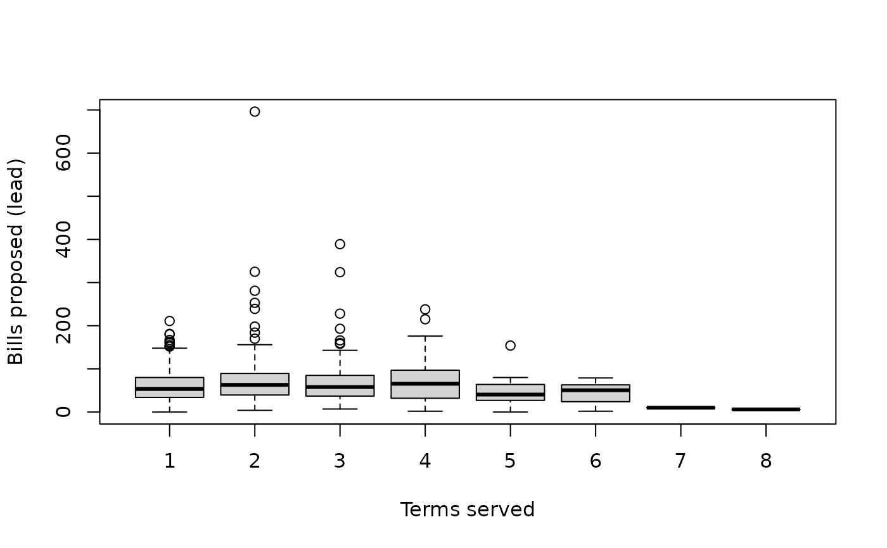

Biographical and political metadata for 947 records of legislators who served in the 20th (2016-2020), 21st (2020-2024), or 22nd (2024-2028) Korean National Assembly. Some legislators appear in multiple assemblies.
Format
A data frame with 947 rows and 15 variables:
- member_id
Unique legislator identifier (MONA_CD from the National Assembly API)
- assembly
Assembly number (20, 21, or 22)
- name
Name in Korean (hangul)
- name_hanja
Name in Chinese characters (hanja)
- name_eng
Name in English (romanized)
- party
Party affiliation during the assembly term
- party_elected
Party at the time of election
- district
Electoral district name, or party list position for proportional members
- district_type
Election type: "constituency" or "proportional"
- committees
Standing committee assignments (comma-separated)
- gender
"M" (male) or "F" (female)
- birth_date
Date of birth
- seniority
Number of terms served, including current (1 = first-term)
- n_bills
Total bills participated in (as lead proposer or co-sponsor)
- n_bills_lead
Bills proposed as lead (primary) proposer
Source
Open National Assembly API (https://open.assembly.go.kr). License: public domain (Korean government open data).
Details
661 unique legislators served across the three assemblies. member_id
is consistent across assemblies, so legislators can be tracked over time.
Party names may differ between party (mid-term) and party_elected
(election day) due to party mergers and name changes, which are common
in Korean politics.
Examples
data(legislators)
# Party composition by assembly
table(legislators$assembly, legislators$party)
#>
#> 개혁신당 국민의당 국민의힘 기본소득당 녹색정의당 더불어민주당 무소속
#> 20 0 25 0 0 0 138 6
#> 21 0 1 123 1 2 180 6
#> 22 3 0 109 1 0 171 3
#>
#> 민주평화당 바른미래당 사회민주당 새누리당 시대전환 열린민주당 자유한국당
#> 20 6 17 0 10 0 0 111
#> 21 0 0 0 0 1 1 0
#> 22 0 0 1 0 0 0 0
#>
#> 정의당 조국혁신당 진보당
#> 20 7 0 0
#> 21 6 0 1
#> 22 0 13 4
# Gender gap in bill production
tapply(legislators$n_bills_lead, legislators$gender, median)
#> F M
#> 63 55
# First-term vs senior legislators
boxplot(n_bills_lead ~ seniority, data = legislators,
xlab = "Terms served", ylab = "Bills proposed (lead)")
